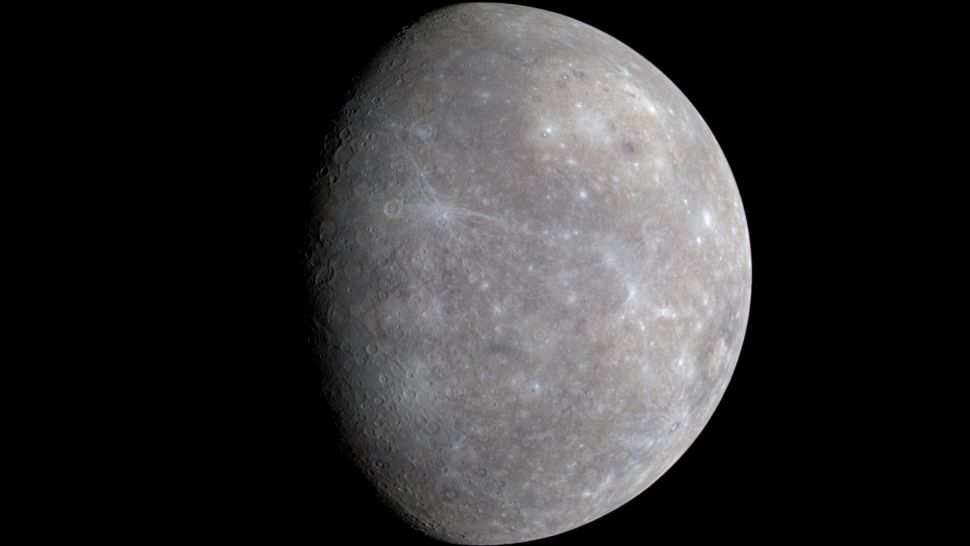
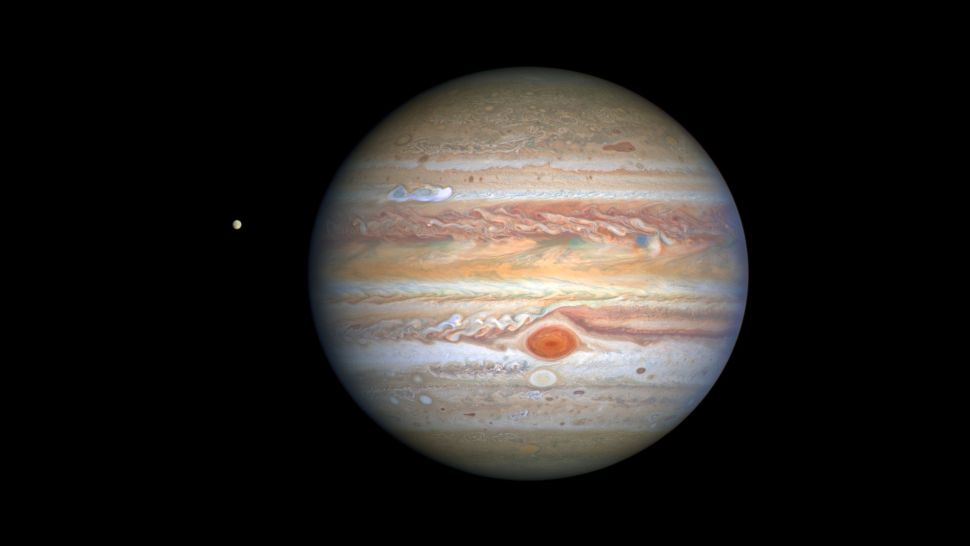
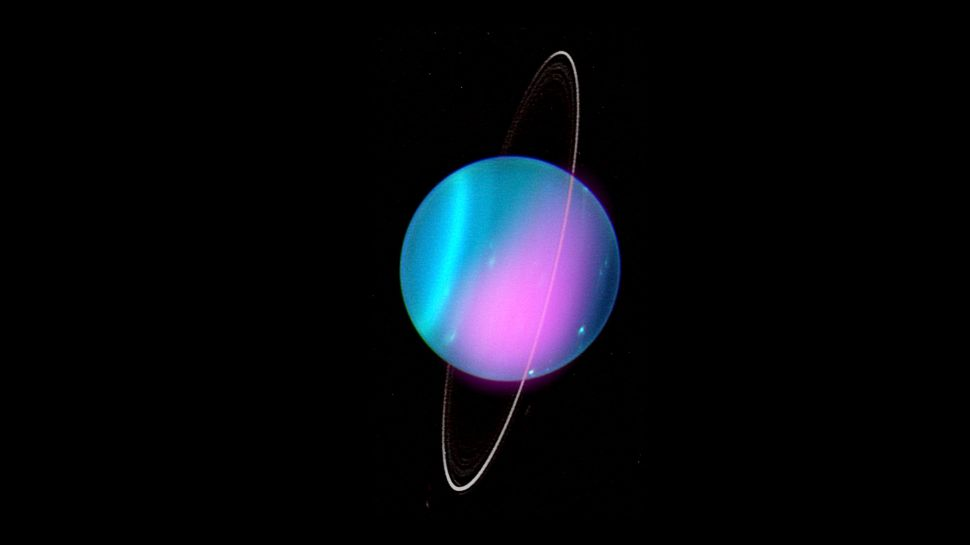

Mercury
Zipping around the sun in only 88 days, Mercury is the closest planet to the sun, and it's also the smallest, only a little bit larger than Earth's moon. Because its so close to the sun (about two-fifths the distance between Earth and the sun), Mercury experiences dramatic changes in its day and night temperatures: Mercury temperatures can reach a scorching 840 F (450 C) in the day, which is hot enough to melt lead. Meanwhile, on the night side, temperatures drop to minus 290 F (minus 180 C). Mercury has
Venus
Zipping around the sun in only 88 days, Mercury is the closest planet to the sun, and it's also the smallest, only a little bit larger than Earth's moon. Because its so close to the sun (about two-fifths the distance between Earth and the sun), Mercury experiences dramatic changes in its day and night temperatures: Mercury temperatures can reach a scorching 840 F (450 C) in the day, which is hot enough to melt lead. Meanwhile, on the night side, temperatures drop to minus 290 F (minus 180 C). Mercury has

Earth
Zipping around the sun in only 88 days, Mercury is the closest planet to the sun, and it's also the smallest, only a little bit larger than Earth's moon. Because its so close to the sun (about two-fifths the distance between Earth and the sun), Mercury experiences dramatic changes in its day and night temperatures: Mercury temperatures can reach a scorching 840 F (450 C) in the day, which is hot enough to melt lead. Meanwhile, on the night side, temperatures drop to minus 290 F (minus 180 C). Mercury has

Mars
Zipping around the sun in only 88 days, Mercury is the closest planet to the sun, and it's also the smallest, only a little bit larger than Earth's moon. Because its so close to the sun (about two-fifths the distance between Earth and the sun), Mercury experiences dramatic changes in its day and night temperatures: Mercury temperatures can reach a scorching 840 F (450 C) in the day, which is hot enough to melt lead. Meanwhile, on the night side, temperatures drop to minus 290 F (minus 180 C). Mercury has

Jupiter
Zipping around the sun in only 88 days, Mercury is the closest planet to the sun, and it's also the smallest, only a little bit larger than Earth's moon. Because its so close to the sun (about two-fifths the distance between Earth and the sun), Mercury experiences dramatic changes in its day and night temperatures: Mercury temperatures can reach a scorching 840 F (450 C) in the day, which is hot enough to melt lead. Meanwhile, on the night side, temperatures drop to minus 290 F (minus 180 C). Mercury has
Saturn
Zipping around the sun in only 88 days, Mercury is the closest planet to the sun, and it's also the smallest, only a little bit larger than Earth's moon. Because its so close to the sun (about two-fifths the distance between Earth and the sun), Mercury experiences dramatic changes in its day and night temperatures: Mercury temperatures can reach a scorching 840 F (450 C) in the day, which is hot enough to melt lead. Meanwhile, on the night side, temperatures drop to minus 290 F (minus 180 C). Mercury has

Uranus
Zipping around the sun in only 88 days, Mercury is the closest planet to the sun, and it's also the smallest, only a little bit larger than Earth's moon. Because its so close to the sun (about two-fifths the distance between Earth and the sun), Mercury experiences dramatic changes in its day and night temperatures: Mercury temperatures can reach a scorching 840 F (450 C) in the day, which is hot enough to melt lead. Meanwhile, on the night side, temperatures drop to minus 290 F (minus 180 C). Mercury has
Neptune
Zipping around the sun in only 88 days, Mercury is the closest planet to the sun, and it's also the smallest, only a little bit larger than Earth's moon. Because its so close to the sun (about two-fifths the distance between Earth and the sun), Mercury experiences dramatic changes in its day and night temperatures: Mercury temperatures can reach a scorching 840 F (450 C) in the day, which is hot enough to melt lead. Meanwhile, on the night side, temperatures drop to minus 290 F (minus 180 C). Mercury has

Pluto
Zipping around the sun in only 88 days, Mercury is the closest planet to the sun, and it's also the smallest, only a little bit larger than Earth's moon. Because its so close to the sun (about two-fifths the distance between Earth and the sun), Mercury experiences dramatic changes in its day and night temperatures: Mercury temperatures can reach a scorching 840 F (450 C) in the day, which is hot enough to melt lead. Meanwhile, on the night side, temperatures drop to minus 290 F (minus 180 C). Mercury has